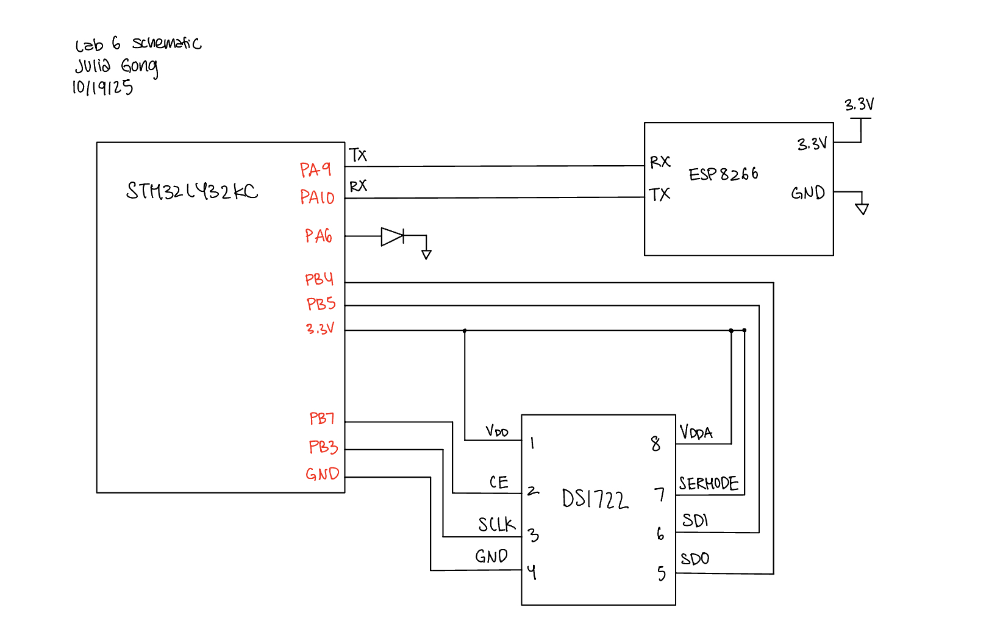
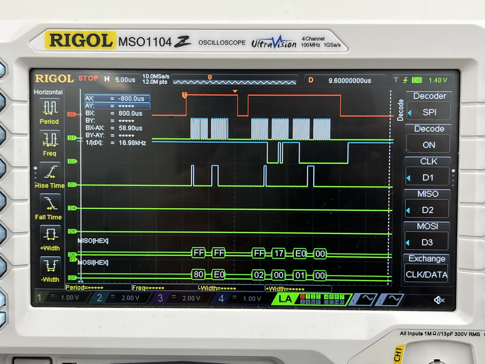

Lab 6: The Internet of Things and Serial Peripheral Interface
Introduction
In this lab, the objective was to design and build a simple IoT device, write C libraries to implement SPI on the MCU and interface with a temperature sensor, interface with a ESP8266 module using UART, and write an HTML page to control an LED and temperature sensor. The webpage allows users to select the output resolution for the temperature sensor and displays the temperature sensor reading. When selecting a specific resolution on the webpage, the MCU would then send the specific write and read commands to the temperature sensor.
MCU Design and Testing Methodology.
The MCU interface consisted of UART communication to the ESP8266 and SPI communication to the temperature sensor. Inputs for the temperature sensor inputs relied on values received by the MCU through UART.
To create the digital interface for the lab, the MCU must supply a webpage to the ESP8266 and interpret its requests. The 125000 baud serial UART connection on the MCU and UART TX and RX lines of the ESP8266 were used to interface between the devices. Therefore, the ESP8266 updates the webpage from the MCU, sending the most recent request from the user. The MCU then transmits a webpage encoded as an HTML file to the ESP8266. The ESP8266 creates a WIFI access point. Once connecting to the network, http://192.168.4.1/ displays the webpage.
Temperature sensor resolution commands receieved from the user to the MCU are then used to determine the write and read commands sent to the temperature sensor over SPI. The number of resolution bits is first written to the temperature sensor register, and then a read register command reads 2 bytes of data that contain the temperature. The 2 bytes are split into the MSB and LSB byte, where the MSB contains a signed bit. The equation \(Temp = MSB + LSB/256.0\) was used to extract the correct temperature from these bytes. This value is then included on the webpage and sent to the ESP8266 over UART.
Hardware Implementation
The system hardware included connection to the ESP8266 and temperature sensor. The ESP8266 was directly placed into the MikroBUS socket on the development board while the temperature sensor and LED were directly connected to the MCU pins.
Technical Documentation
The code for this lab can be found in this Github repository. This contains the code for main.c, SPI configuration, temperature sensor configuration as well as external libraries used.
Schematic
The schematic below depicts the connections between the MCU, LED, ESP8266, and the temperature sensor.

Results and Discussion
The system was able to correctly interface with the LED and temperature sensor through the HTML website. The website clearly displays the temperature sensor readings as well as buttons to select the resolution for the temperature sensor. The display shows how the temperature sensor readings get more precise as the resolution increases.
SPI Logic Analyzer Trace
A logic analyzer was used to debug and verify SPI communication.
- DO shows SPI chip select
- D1 shows the CLK
- D2 shows MISO (microcontroller in, peripheral out)
- D3 shows MOSI (microcontroller out, peripheral in)
After the chip select goes high for the first time, the microcontroller sends 0x80, which indicates the address of the write config register, followed by 0xE0, which sets up an 8-bit temperature resolution. After the chip select goes high for the second time, the microcontroller sends 0x02 to read the MSB followed by 0x00 which is a filler command so that the microcontroller can receive data from the temperature sensor. The microcontroller receives 0x17 for the MSB. Then, the microcontroller sends 0x01 followed by a filler 0x00 command to read and receive the LSB from the temperature sensor. The microcontroller reads 0x00. Decoding the temperature results in \(Temp = 23 + \frac{0}{256} = 23 ^\circ C\)

Conclusion
I was able to design a system that interfaces with a temperature sensor using SPI and ESP8266 using UART to create a webpage that controls and displays the temperature data! This lab took a total of 12 hours.
AI Prototype Summary
For my AI prototype I asked ChatGPT these two prompts:
- I’m making a web portal to interface with a temperature sensor. Create a HTML page that looks good and is intuitive to show the temperature, control an LED, and change the precision of the readout.
- Write me a C function to carry out a SPI transaction to retrieve a temperature reading from a DS1722 sensor. Make use of CMSIS libraries for the STM32L432KC.
For the first prompt ChatGPT produced a webpage that was a lot more aesthetically pleasing than mine, which included aspects such as different colors and font sizes. As for the second prompt ChatGPT was able to produce code for SPi communication, but it was incorrect. It got the phase for the temperature sensor wrong and wasn’t able to properly calculate the temperature reading.